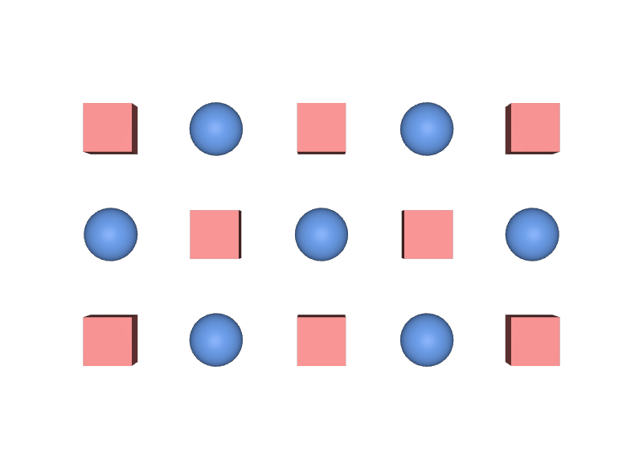

positionsとprotoIndicesの長さが違う
この2つは同じ長さでなければなりません。長さが違うと、正しく配置されません。
STEP 91 · INSTANCING
Primを増やさず、配列だけで大量に配置します
今日これだけ
公式情報に基づく説明
UsdGeomPointInstancerは、置きたい形（Prototype）の一覧と、それをどこへ何個置くかを配列で持つPrimです。positionsに置く場所を並べ、protoIndicesにどのPrototypeを使うかを並べます。配置が何個増えてもPrimの数は変わらないため、STEP 86 Scenegraph Instancingよりさらに軽く扱えます。
USDA
def PointInstancer "Scatter"
{
rel prototypes = [
</World/Scatter/Prototypes/Box>,
</World/Scatter/Prototypes/Ball>,
]
point3f[] positions = [
(-2.2, -1.1, 0), (-1.1, -1.1, 0), (0, -1.1, 0), ...
]
int[] protoIndices = [0, 1, 0, 1, 0, 1, 0, 1, 0, 1, 0, 1, 0, 1, 0]
def Scope "Prototypes"
{
def Cube "Box"
{
double size = 0.5
color3f[] primvars:displayColor = [(0.85, 0.2, 0.2)]
}
def Sphere "Ball"
{
double radius = 0.3
color3f[] primvars:displayColor = [(0.15, 0.35, 0.85)]
}
}
}読む順番は3つです。prototypesが「置ける形の一覧」、positionsが「どこへ置くか」、protoIndicesが「各位置でどの形を使うか」です。positionsとprotoIndicesは必ず同じ長さで、その長さが配置の総数になります。
結果

protoIndicesが0の位置に赤い箱、1の位置に青い球が置かれ、市松模様になっています。examples/lesson-64/point-instancer.usda / Apple USD Tools 0.25.2 のusdrecord（Hydra Storm・Metal）/ macOS 26.5.2・Apple M4from pxr import Sdf, Usd, UsdGeom
stage = Usd.Stage.Open("point-instancer.usda")
pi = UsdGeom.PointInstancer(stage.GetPrimAtPath("/World/Scatter"))
print(len(pi.GetPositionsAttr().Get())) # 15
print(len(pi.GetProtoIndicesAttr().Get())) # 15
print(pi.GetPrototypesRel().GetTargets())
# [Sdf.Path('/World/Scatter/Prototypes/Box'),
# Sdf.Path('/World/Scatter/Prototypes/Ball')]
print(len(list(stage.Traverse()))) # 615個を配置しているのに、Stage上のPrimは6個だけです。配置を1000個へ増やしても、増えるのは配列の長さだけで、Primの数は変わりません。
Diagram
Python
from pxr import Gf, Usd, UsdGeom, Vt
stage = Usd.Stage.CreateNew("point-instancer.usda")
UsdGeom.Xform.Define(stage, "/World")
pi = UsdGeom.PointInstancer.Define(stage, "/World/Scatter")
UsdGeom.Scope.Define(stage, "/World/Scatter/Prototypes")
UsdGeom.Cube.Define(stage, "/World/Scatter/Prototypes/Box").CreateSizeAttr(0.5)
UsdGeom.Sphere.Define(stage, "/World/Scatter/Prototypes/Ball").CreateRadiusAttr(0.3)
pi.CreatePrototypesRel().SetTargets(["/World/Scatter/Prototypes/Box",
"/World/Scatter/Prototypes/Ball"])
positions, indices = [], []
for row in range(3):
for col in range(5):
positions.append(Gf.Vec3f(col * 1.1 - 2.2, row * 1.1 - 1.1, 0))
indices.append((row + col) % 2)
pi.CreatePositionsAttr(Vt.Vec3fArray(positions))
pi.CreateProtoIndicesAttr(Vt.IntArray(indices))
stage.Save()prototypesはRelationshipなのでSetTargetsで設定します。positionsとprotoIndicesはAttributeなので、Vt.Vec3fArrayやVt.IntArrayに包んで渡します。向きや大きさを付けたいときは、orientationsとscalesという配列も同じ長さで用意します。
USDA → Python mapping
USDA
rel prototypes = [ ... ]↓Python
pi.CreatePrototypesRel().SetTargets([...])USDA
point3f[] positions = [ ... ]↓Python
pi.CreatePositionsAttr(Vt.Vec3fArray(positions))USDA
int[] protoIndices = [ ... ]↓Python
pi.CreateProtoIndicesAttr(Vt.IntArray(indices))Beginner notes
よくある間違い
この2つは同じ長さでなければなりません。長さが違うと、正しく配置されません。
prototypesが2つなら、使える番号は0と1だけです。
Prototypeとして指したPrimは、それ自体も描画されてしまうことがあります。PrototypesというScopeにまとめ、必要ならvisibilityやSTEP 67 Inactiveで表示を抑えます。
個別の配置はPrimではないため、overでは変えられません。個体差を付けたいときはprimvarsを配列で持たせる方法を使います。
Glossary
point3f[]の配列。int[]の配列。Official references
確認日: